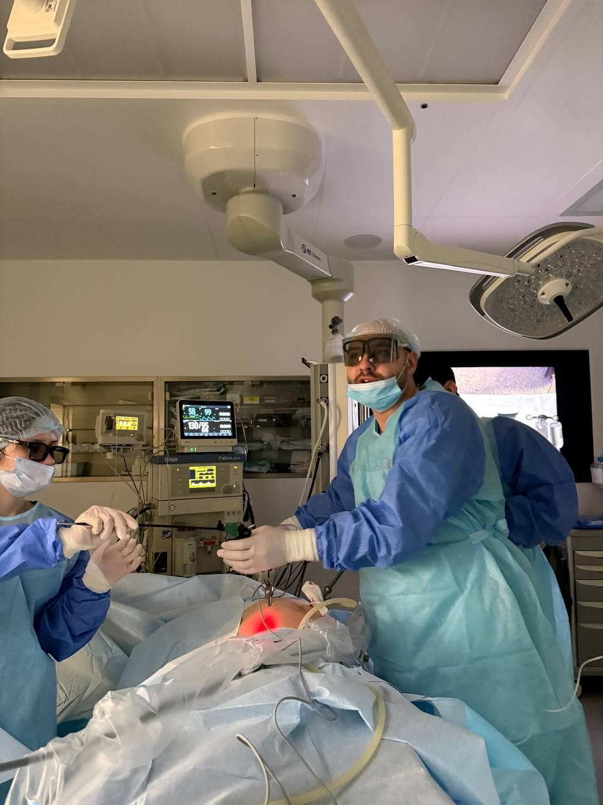
3D-лапароскопия — паховая грыжа
--- Сегодня оперировал паховую грыжу на 3D-стойке. Если обычная лапароскопия — это плоское изображение на экране, то 3D — это как шагнуть внутрь. Глубина,…
Читать →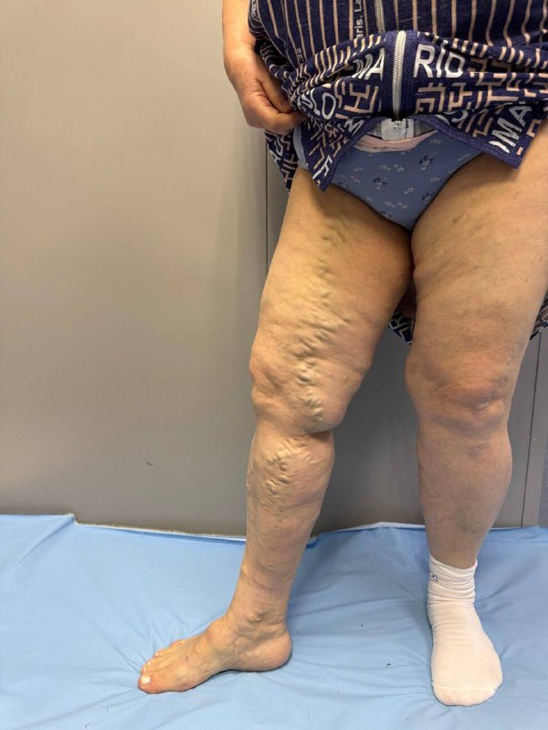
Вред гомеопатии — реальный случай варикоза
--- ЦЕЛЫЙ ГОД. Сегодня на приём пришла пациентка. Варикоз — заметила давно, но к хирургу не пошла. Пошла к гомеопату. Год капель и "индивидуально подобранных…
Читать →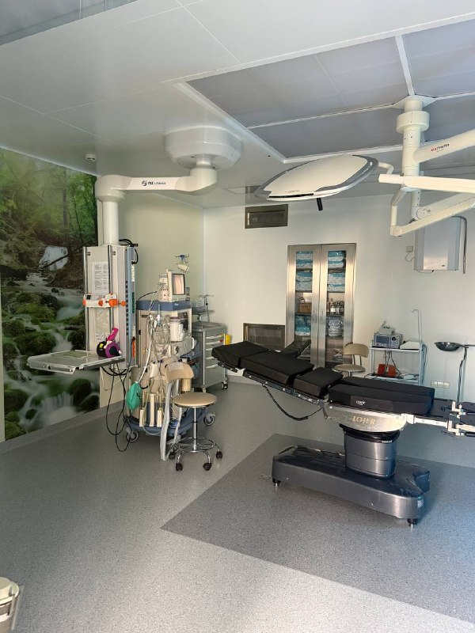
Пятница — помывочная
Пятница. Операций нет. В такие дни у нас помывочная — так мы это называем в операционном блоке. Генеральная уборка, кварцевание, полная обработка всех…
Читать →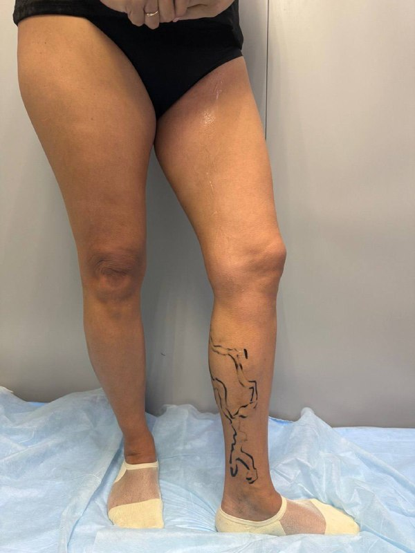
Варикоз — повторная операция, история про доверие
Сегодня у меня 6 операций. Одна из них — особенная. Пациентка молодая. Варикоз. Оперировалась дважды — с разницей в год, в хорошей клинике. Платно.…
Читать →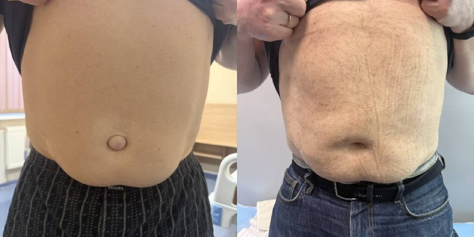
Пупочная грыжа — до и после
Пупочная грыжа. Сколько таких пациентов я видел — не сосчитать. Молодой человек носил её несколько лет. Не болело — и ладно. Выпячивание в области пупка, ну и…
Читать →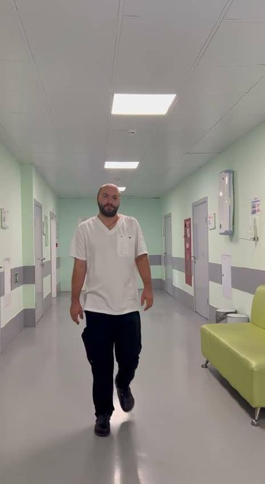
Склеротерапия — больно? Зачем? Сколько?
Склеротерапия. Самый частый вопрос от пациентов — больно? Честно: немного. Игла очень тонкая, вводится препарат который изнутри "склеивает" сосуд. Несколько…
Читать →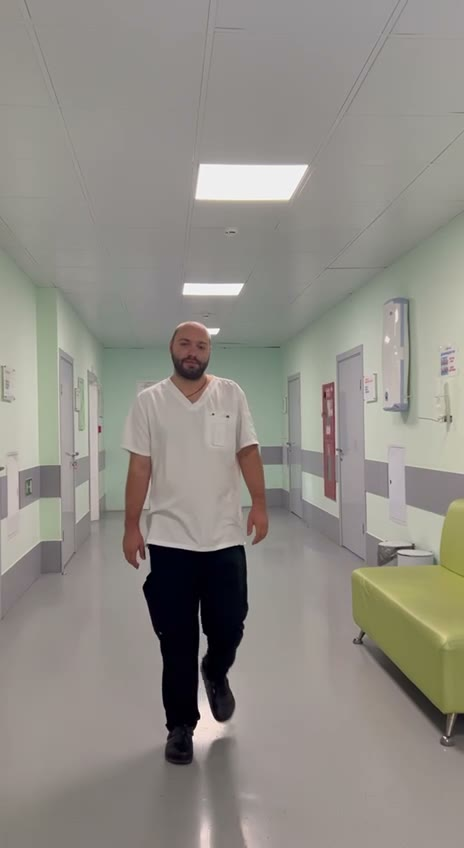
Операционный день — пятница
Пятница. Операций не планировалось. Ну и что с того. С утра — консультации. Одна за другой. Пациенты с варикозом, с грыжами, с желчнокаменной болезнью. Люди,…
Читать →
Страх операции — это нормально
Во время операции разговорились с коллегами. Коллега направила ко мне пациентку. Та пришла — я всё объяснил, ответил на все вопросы. Но было видно: она не…
Читать →Ущемлённая грыжа — экстренная операция
Конец рабочего дня. Вышел из операционной — думал, всё. Меня ждали. Молодые люди стояли у входа. Муж держался. Жена — нет. Несколько часов назад он сам звонил:…
Читать →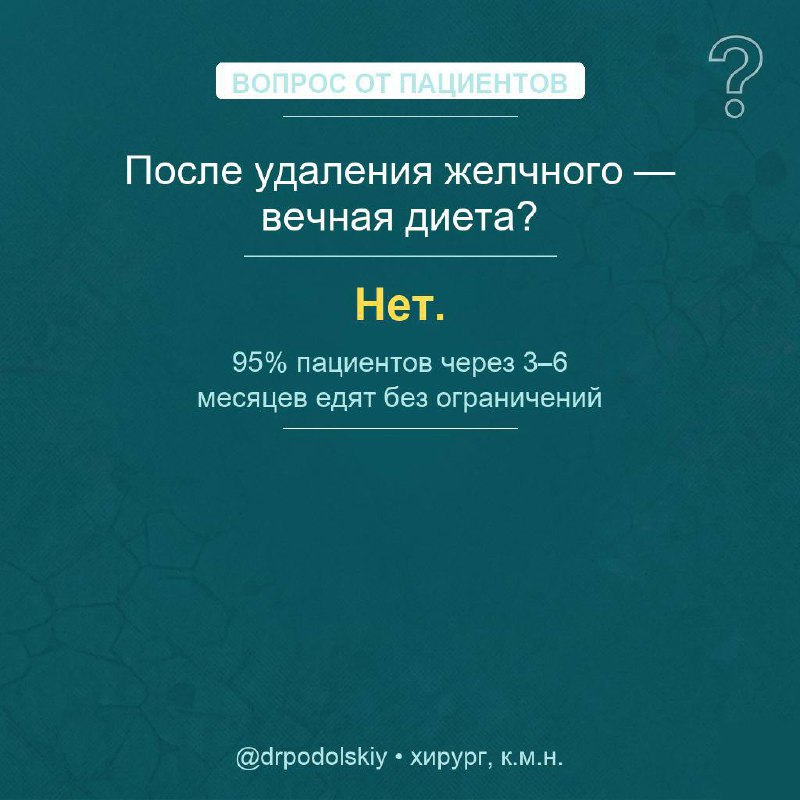
Варикоз — когда точно нужна операция
Недавно на приёме пациентка говорит: "Доктор, я уже три года хожу с этими венами. Всё жду — может само пройдёт?" Не пройдёт. Варикоз — это сломанный клапан.…
Читать →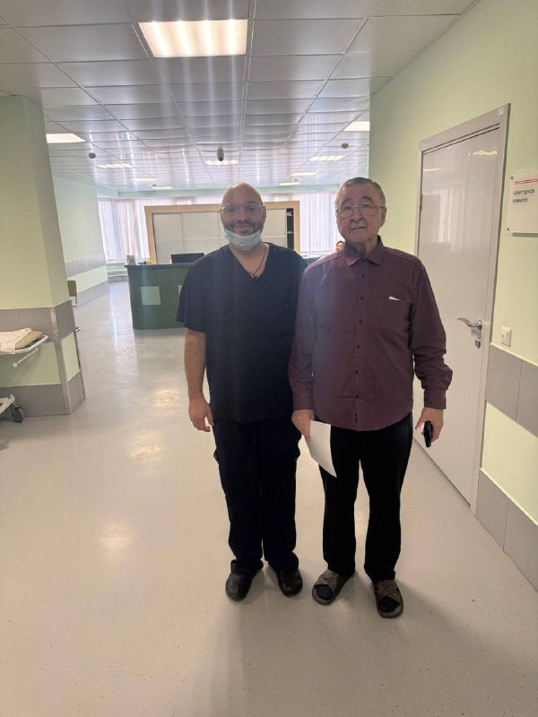
Пост 10 марта — Большая послеоперационная вентральная грыжа
## Нужна информация перед написанием: - [ ] Пациент: мужчина/женщина, возраст? - [ ] Размер грыжи, сколько лет с ней живёт? - [ ] Метод операции: лапароскопия…
Читать →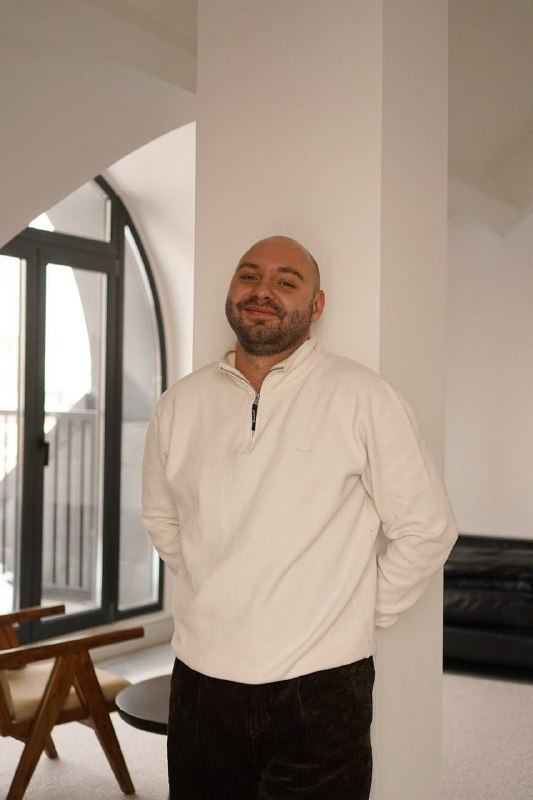
8 марта — варикоз у женщин
Послезавтра — 8 марта. Хочу поздравить заранее — и сказать кое-что важное. Варикоз поражает женщин вдвое чаще мужчин. Не потому что слабее — чистая физиология.…
Читать →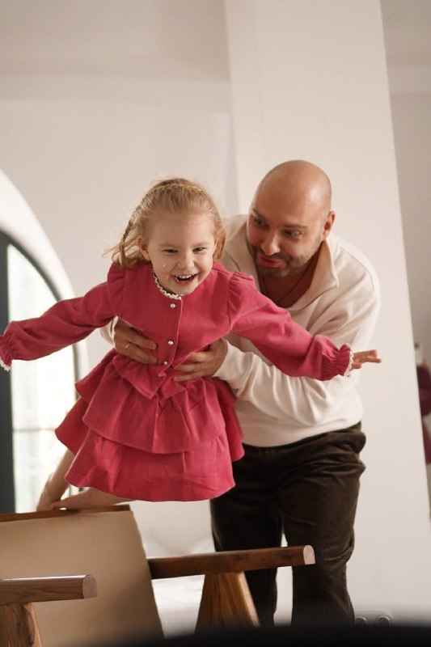
Варикоз — физиология и клапаны
Часто объясняю пациентам с нуля: без понимания нормы патология непонятна. Кровоснабжение работает в двух направлениях. Артериальная кровь движется сверху вниз,…
Читать →
Повторная операция — 6 операций за день
Сегодня шесть операций подряд. Все по поводу варикозной болезни. Одна из пациенток уже оперировалась два года назад — классически, с большими разрезами.…
Читать →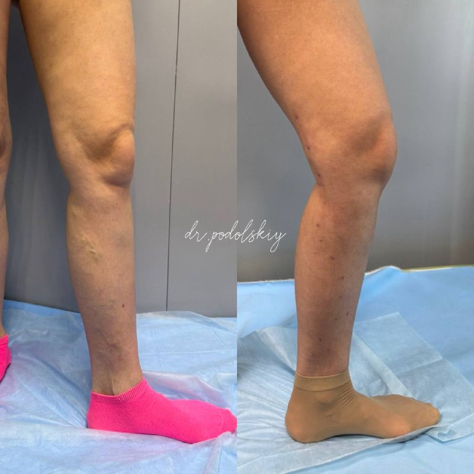